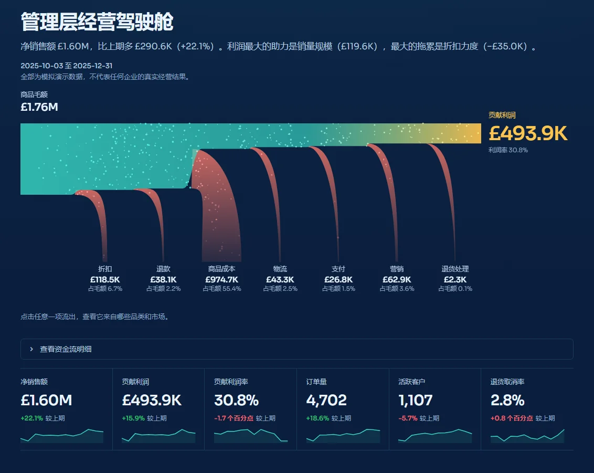
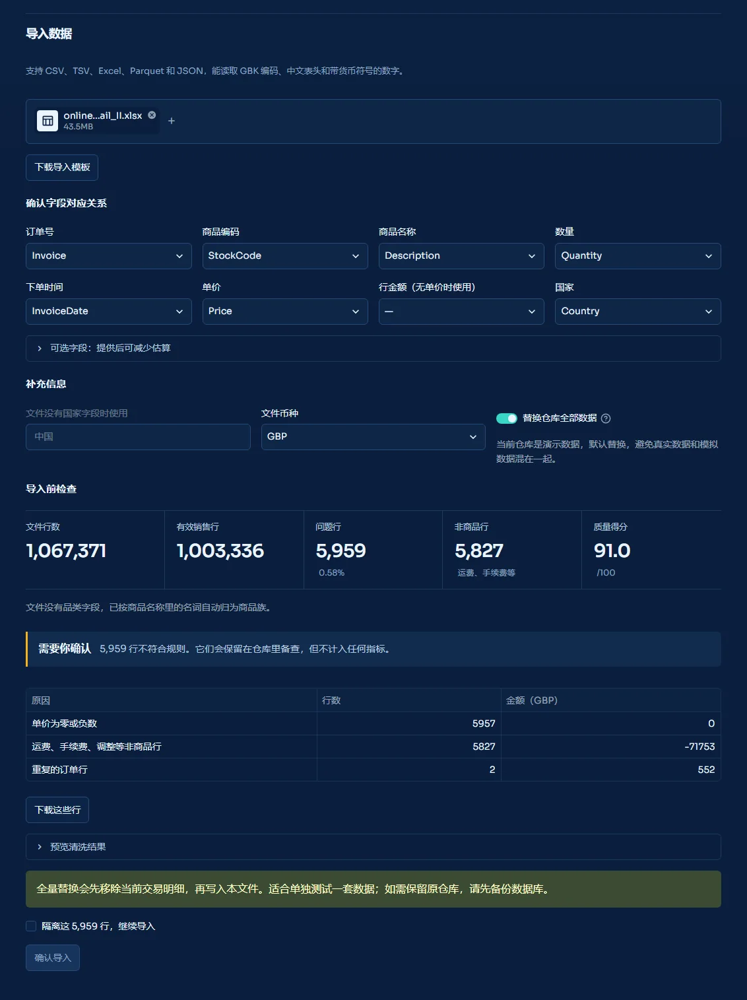

产品演示
一分钟看完整个产品
这段演示录自本地运行的应用，依次经过资金流钻取、利润桥接、全球市场、定价、风险模拟、问答助手和信任中心。点下方的章节可以直接跳到对应位置。
工作方式
一份明细是怎么变成决策的
所有页面读同一本带正负号的账本：退货记成负数的反向记录，所以任何维度的汇总都已经扣除退货；每一行都记着数据来自哪里，指标的可信度由它最弱的输入决定。
第 1 部分
看见经营
钱从哪里来、流向哪里，哪些市场在赚钱。
经营总览
钱去了哪里，一眼看清
总览页开头先用一句话说清本期发生了什么，比如“净销售额比上期多 £290.6K，利润最大的助力是销量规模，最大的拖累是折扣力度”。下面的图表给出这句话的依据。
资金河：把利润表画成一条河
河的起点是商品毛额。往右流的过程中，折扣、退款、商品成本、物流、支付、营销和退货处理依次分流出去，每条支流的宽度就是它的金额，最后剩下的就是贡献利润。
- 点击任意一项流出，下方会展开它按品类和按市场的明细，以及它占销售额的比例相比基准期变了多少。
- 指标条显示净销售额、贡献利润、利润率、订单、客户和退货率，每一项都标出相对基准期的变化，并附上近 12 个月的走势。
- 基准期可选：上一周期，或去年同期。零售有季节性，十二月和上一个季度比，往往会把旺季误读成增长。

趋势、信号和前瞻
趋势图展示近两年的净销售额、毛利润和贡献利润。还没结束的月份用虚线画出，因为天数不够的月份看起来总像是在下跌。
- 值得处理的问题按 P0 到 P3 排序，例如利润承压、退货率上升、补货风险，每条都附带证据。
- 未来三个月的贡献利润以 80% 和 95% 区间展示，区间越宽代表越不确定。
- 目标完成度逐项列出。默认目标由近三个月均值加规则增幅生成，并非已批准的预算，页面会写明这一点。


利润与单位经济
利润为什么变了，拆到每一分钱
价格、销量、结构、成本桥接
利润变化最容易被说成“卖得好”或“成本高”。桥接把变化拆成互不重叠的几块：销量规模、商品结构、标价变化、折扣力度、单位成本、新增商品、停售商品、物流、支付、营销和退货。
- 各项相加等于实际变化，未解释差额单独标在图下，演示数据上是 £0.00。
- 结构单独成项：卖得多的如果是低利润商品，总销量涨了，利润照样可能跌。
- 另一张瀑布图回答“钱去了哪里”，从商品毛额一路扣到贡献利润。


全球市场
哪个市场在赚钱
一个可以拖着转的地球仪
每个市场是一个气泡，大小代表净销售额。青色表示利润率高于整体，珊瑚色表示低于整体，一眼就能看出“规模大但不赚钱”的市场。
- 拖动旋转地球，点击气泡打开这个市场的详情：规模、利润率、退货率和它的主要品类。
- 键盘也能操作：左右方向键旋转，上下方向键在市场之间切换，回车打开详情。
- 能识别 132 个国家和地区，包括 EIRE、RSA、USA 这类导出文件里常见的写法，以及中文名和 ISO 代码。

销售诊断：变化来自哪里
月度趋势可以切换净销售额、订单量、活跃客户和客单价。销售结构按国家、品类和渠道拆开，再列出相对基准期变化最大的维度，最后用星期热力图看销售节奏。


第 2 部分
理解原因
利润变化背后的客户、商品和价格。
客户价值与流失
谁最值钱，谁可能不再回来
只有通过验证的模型才会被采用
客户先按最近一次购买、购买频次和金额分成冠军、忠诚、成长、潜力、风险和沉睡几类。流失模型预测每位客户未来 90 天会不会回购。
- 跨期验证：用较早的数据训练，用之后 90 天的真实结果打分。AUC 低于 0.60 时页面会说明，并改用可解释的规则分数。
- 校准图展示预测概率和实际回购率是否一致，点越靠近对角线，预测概率越能按字面理解。
- 优先联系名单按“预期利润 × 流失风险”排序，并给出召回、自动触达或交叉销售的建议。
- 覆盖范围写明：匿名订单不在客户分析内，页面会标出带客户编号的订单占多少销售额。


商品与库存
什么好卖、什么一起卖、什么该补货
集中度与连带购买
累计收入曲线显示收入有多依赖头部商品，按全部商品计算，而不是只算前几百个。商品效率地图把销售额和贡献利润率放在一起，标出卖得多但赚得少的商品。
- 连带购买用提升度衡量：提升度为 2，代表两件商品一起出现的次数是随机搭配时的两倍。
- 至少要有 8 笔共同订单才会列出，避免把偶然当规律。


按服务水平计算的补货策略
商品按价值（ABC）和需求稳定性（XYZ）分成九类：AX 适合自动补货，AZ 需要人工盯。安全库存由目标服务水平、需求波动和交期波动一起决定。
- 需求按净数计算：当天下单又取消的订单不算需求。
- 补货清单列出现有库存、补货线、建议订购量、预计缺货日和缺货会损失的利润，可以直接下载。
- 数据里没有库存字段时，这一页只分析需求，不会编造库存去发补货告警。

定价实验室
顾客对价格有多敏感，该不该调价
价格弹性从你自己的订单里估计
每个品类做一次泊松回归：每周订单数对实际售价，同时扣除每个商品本身的受欢迎程度和每一周的季节影响，所以旺季和爆款不会被误当成价格效应。
- 按销售渠道分别跟踪：同一商品在网店和批发渠道常用不同价目表，混在一起会把渠道比例的变化误当成价格变化。
- 误差按商品聚类，再向品类先验收缩：数据少的品类贴近行业假设，数据多的品类主要由数据决定，每一行都标明是哪一种。
- 每条调价建议都给出弹性 95% 区间两端的利润变化，只有在不利的一端仍然赚钱时才算稳健。
历史价格不是随机设定的，估计只在历史价格附近可靠。页面会建议先用 A/B 实验验证，再全量调价。


第 3 部分
做出决策
先模拟，再实验，最后把行动落实到人。
概率决策实验室
做决定之前，先看几千种可能的结果
一个方案不是一个数字，而是一个分布
调整价格、折扣、营销、采购成本或退货率，系统会抽取 5,000 种可能的未来：价格弹性、营销响应、基础需求、采购成本和物流成本都按看得见的分布变化。
- 落下的每个点是一种可能的结果，左边红色是利润下降，右边青色是利润改善。
- 同时给出利润变化的中位数、较差情形（5%）和较好情形（95%），以及改善概率和“增收但减利”的概率。
- 敏感度条形图告诉你结果最受哪个假设影响，值得先把那个假设弄准。
- 自动寻优让所有价格、折扣和营销组合面对同一批模拟未来，在收益与风险之间找出最优边界。


A/B 实验分析
这次实验能下结论吗
证据不够时，结论就是“证据不足”
实验不只看转化率，还看收入、利润和退货。每个指标都给出 95% 区间，结论按证据分为推广、试点、证据不足和停止四种。
- 推广要求利润区间整体在 0 以上；停止对应利润明显下降或退货超过护栏。
- 分组检查发现对照组和实验组人数失衡时会报警，这通常说明分流出了问题。
- 样本够不够：给出最小可检测提升和所需样本量，说明这次实验本来能不能发现有意义的效果。
- 可以导入真实实验的客户级结果；演示实验只在模拟仓库里出现。


诊断、预测与行动
从发现问题到有人负责
根因诊断和预测
收入变化用 Shapley 方法精确拆成活跃客户、购买频次和客单价三部分，再按国家、品类、渠道找出变化最大的地方，并标出历史上的异常月份。
预测页最多同时比较十个时序模型和一个组合模型，用滚动回测按误差排序，选出最准的一个，并说明它比“沿用上月”准多少。


行动中心、问答助手和报告
- 行动中心把诊断出的问题变成可分配的行动，记录负责人、截止日和状态；同一个问题在不同日期范围下保持同一条记录。
- 问答助手用日常语言提问，例如“为什么利润下降？”。它只回答已审核查询能覆盖的 12 类问题，每个答案都附上计算方法；答不了的问题会直接说明。
- 经营报告一键生成 HTML、Word 和 Markdown 三种格式，内容和页面上的数字一致。


第 4 部分
信任数据
数据怎么进来，可信度怎么标，在真实账本上表现如何。
数据接入
导入你自己的数据，几个坏行拖不垮整个文件
下面是导入真实公开数据集 UCI Online Retail II 的过程：一个 45MB、两个年度工作表、106 万行的 Excel 文件。
先检查，再确认，再导入
- 字段自动匹配：Invoice、StockCode、Price 这类表头会自动对应到订单号、商品编码和单价，拿不准的会提示你确认。
- 导入前检查：5,959 行问题行（0.58%，几乎都是零价记录）和 5,827 行运费、手续费等非商品行被单独列出，写明原因和金额，还可以下载核对。
- 由你决定：勾选“隔离这些行”之后，“确认导入”才能点击。隔离的行保留在仓库里备查，但不计入任何指标。
- 默认替换演示数据，避免真实数据和模拟数据混在一起；导入前自动备份，保留最近三份，随时可以恢复。
只有缺少汇率这类结构性问题，或者超过 30% 的行不合格（多半是字段映射错了），才会拒绝整个文件。


数据与指标信任中心
每个数字都说得清来源
估算值不会被当成审计数字
每一行记录交易、折扣、成本和库存各自的来源状态：已核验、估算、模拟或未提供。指标的可信度取决于它最弱的那个输入，并按行数加权。
- 没有的数据不编造：没有折扣字段按成交价计，收入和源文件逐分对账；没有库存就留空；没有品类就按商品名称归并成商品族。
- 质量维度覆盖完整性、唯一性、有效性、一致性、覆盖度和契约符合度。
- 未计入的行按原因列出并可下载，数据血缘、导入记录和故障演练也都在这一页。

真实数据验证
在 106 万行真实账本上跑过一遍
演示数据是干净的，真实账本不是。2.0 用公开的 UCI Online Retail II 数据集完整跑了一遍：在真实浏览器里上传、导入，再逐页检查。除最后两项外，下面的数字都来自那次运行。
真实数据暴露的问题
下面这些问题只在真实数据上出现，现在都已修复，并加了回归测试。
| 情形 | 之前 | 现在 |
|---|---|---|
| 源文件没有折扣字段 | 凭空扣了 3% 折扣，净销售额比源文件少 £56.6 万 | 按成交价计，与源文件逐分对账 |
| 有几千行零价记录 | 整个文件被拒绝导入 | 问题行隔离、可下载，确认后照常导入 |
| 同一商品有两套价目表 | 网店和批发价格混在一起，弹性被拉到 −0.16 | 按销售渠道分别跟踪，得到 −0.96 |
| 邮费和平台手续费 | 算作商品销售，亚马逊手续费被记成 £22 万退款 | 作为非商品行单独列出 |
| 源文件没有库存 | 编造库存量，并据此发出补货告警 | 不编造数据，只分析需求 |
| 当天下单又取消的大单 | 80,995 件被算成日需求 900 | 需求按扣除退货后的净数计算 |
| 打开行动中心 | 每次都写库，导致全站缓存失效，页面要等 5 秒 | 只在内容变化时写入，重复访问在 0.6 秒以内 |
方法与边界
它擅长什么，又在哪里需要小心
可以放心依赖的
- 净销售额、退货和利润桥接按带正负号的账本计算，逐分对账。
- 每个指标都标明来源和可信度。
- 预测和流失模型都经过回测或跨期验证才会使用。
需要验证的
- 价格弹性来自观测数据，不是随机实验；在演示数据上估计偏向 0，涨价建议可能高估收益。
- 没有成本数据时，利润按规则估算，只能看方向。
- 默认经营目标由规则生成，并非已批准预算。
部署时需要补上的
- 访问码只是一道共用的门，企业部署还需要账号体系和权限管理。
- 本地备份不能替代异地备份。
- 除中英文外的六种语言只翻译了导航。
每个模型的做法、假设和局限都写在 方法说明 里。
技术与工程
怎么做出来的
技术栈
Python、pandas、NumPy 和 SQLite 负责数据与模型；Streamlit 和 Plotly 负责界面。资金河、地球仪、指标条和模拟分布用 Canvas 和 SVG 手工绘制，不依赖外部库，可以完全离线运行。
质量保障
250 项自动化测试覆盖全部 17 个页面的渲染和关键点击路径，覆盖率 93%。CI 在 Python 3.11 和 3.13 上运行测试、Ruff、Bandit 和 pip-audit。
可访问性
每张图都可以切换成表格查看；动画遵从系统的“减少动效”设置，键盘可以操作资金河和地球仪；配色经过色盲区分校验。
开始使用
在自己的电脑上跑起来
需要 Python 3.10 或更高版本。Windows 上也可以直接双击 run_windows.bat。首次打开会自动生成演示数据，约需 15 秒，默认地址是 http://127.0.0.1:8501。
git clone https://github.com/zhao-yushen/InsightFlow-Analytics.git
cd InsightFlow-Analytics
python -m venv .venv
.venv\Scripts\activate
pip install -e .
insightflow run